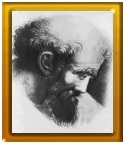
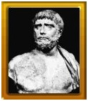
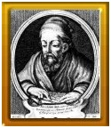
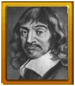

S£AWNI MATEMATYCY
PITAGORAS (ok. 572 - ok. 497 p.n.e.)

Pitagoras, którego imieniem nazwano powszechnie znane z geometrii elementarnej twierdzenie zajmuje poczesne miejsce w historii pocz±tków my¶li matematycznej staro¿ytnej Grecji. Na podstawie ¼róde³ historycznych uda³o siê ustaliæ, i¿ urodzi³ siê oko³o 572 r. na wyspie Samos i ¿e zmar³ oko³o 497 r p.n.e. w Metaponcie. Ów grecki matematyk, filozof, pó³legendarny za³o¿yciel s³ynnej szko³y pitagorskiej by³ tak¿e twórc± kierunku filozoficznego (pitagoreizmu), inicjatorem nurtu o orientacji religijnej w staro¿ytnej filozofii greckiej. Oko³o 532 roku p.n.e. Pitagoras opu¶ci³ wyspê Samos i wyemigrowa³ do kolonii joñskich w Italii. Osiedli³ siê w Krotonie, gdzie w³a¶nie za³o¿y³ zwi±zek pitagorejski. Tam tak¿e rozwin±³ ¿yw± dzia³alno¶æ naukow±, filozoficzn± i polityczn±. Po spaleniu szko³y filozof zamieszka³ w Metaponicie, gdzie przebywa³ a¿ do ¶mierci. Tradycja przypisuje Pitagorasowi zapocz±tkowanie zarówno idei religijno-etycznych oraz politycznych, jak i naukowego kierunku szko³y. Przyj±³ siê tak¿e pogl±d, i¿ Pitagoras przeszczepi³ na grunt grecki geometryczne i astronomiczne umiejêtno¶ci Egipcjan i Babiloñczyków oraz, ¿e zainicjowa³ badania naukowe, uwieñczone szeregiem znakomitych osi±gniêæ. Do osi±gniêæ tych nale¿y miêdzy innymi stworzenie pocz±tków teorii liczb, sformu³owanie twierdzenia Pitagorasa oraz koncepcja harmonijno¶ci kosmosu. Pr±d filozoficzny, którego inicjatorem by³ Pitagoras, trwa³ ponad dwa wieki, a jego relikty daj± siê zauwa¿yæ jeszcze w pierwszym wieku naszej ery. Dzi¶ niestety trudno dok³adnie ustaliæ, co szko³a pitagorejska zawdziêcza swemu mistrzowi, a co jego uczniom. Dlatego te¿ mówiæ raczej nale¿y o dokonaniach pitagorejczyków i nie przypisywaæ wszystkich odkryæ samemu tylko za³o¿ycielowi szko³y. W zakresie geometrii pitagorejczycy stworzyli teoriê równoleg³ych wraz z twierdzeniem o sumie k±tów trójk±ta, czworok±ta i wieloboków foremnych ca³± p³aszczyznê pokryæ mo¿na tylko trójk±tami, kwadratami albo sze¶ciok±tami. W szkole pitagorejskiej narodzi³y siê trzy wielkie problemy: podwojenie sze¶cianu, podzia³ k±ta na trzy równe czê¶ci oraz kwadratura ko³a, które nale¿a³o rozwi±zaæ za pomoc± cyrkla i linijki (bez podzia³ki). To ostatnie zagadnienie, które sta³o siê pasj± wielu wybitnych uczonych, w tej liczbie równie¿ matematyka polskiego Adama Kochañskiego, zosta³o rozwi±zane negatywnie przez Lindemana w 1882 r. Pitagorejczycy poza zagadnieniami z zakresu geometrii interesowali siê tak¿e teori± liczb. Spo¶ród wszystkich liczb naturalnych, a wiêc ca³kowitych i dodatnich, wyró¿nili pewne nieskoñczone ci±gi liczb zwane ogólnie liczbami wielok±tnymi, a wiêc liczby trójk±tne, czworok±tne, piêciok±tne itd. Numeruj±c odpowiednio wierzcho³ki oraz pewne wewnêtrzne punkty coraz to wiêkszych wielok±tów foremnych o przyjêtej liczbie boków, nazywano numery ostatnich wierzcho³ków kolejnych wielok±tów liczbami k-k±tnymi... Ponadto pitagorejczycy rozpatrywali tak zwane liczby gnomiczne i liczby doskona³e, szukali par liczb zaprzyja¼nionych, oraz zajmowali siê proporcjami. Szczególne znaczenie dla dalszego rozwoju matematyki mia³o odkrycie przez pitagorejczyków odcinków niewspó³miernych. Wokó³ tego odkrycia naros³o sporo legend i mniej lub bardziej prawdopodobnych domniemañ. Jedno jest wszak¿e pewne, i¿ stwierdzenie dotycz±ce istnienia odcinków niewspó³miernych (np. bok i przek±tna kwadratu) wywo³a³o - wskutek utrzymywania tego odkrycia w tajemnicy - roz³am w¶ród pitagorejczyków. Jedni domagali siê wymiany informacji, niezatajania wyników badañ i odkryæ, inni natomiast d±¿yli do zachowania tajno¶ci. Tendencje te doprowadzi³y do wyodrêbnienia siê w szkole pitagorejskiej dwóch kierunków - naukowego i religijno-mistycznego. Zwolenników pierwszego nazywano matematykami, drugiego natomiast - akuzmatykami. Mimo i¿ w pr±dzie filozoficzno-religijnym pitagorejczyków dominowa³y muzyka, harmonia i liczba jako czynniki wychowawcze, s³u¿±ce zbli¿eniu do Boga, zas³uga stworzonej przez Pitagorasa szko³y dla rozwoju my¶li matematycznej jest bezsprzeczna i dlatego godzi siê imiê tego wielkiego Greka zachowaæ w pamiêci.
TALES Z MILETU (ok. 627 - ok. 540 p.n.e.)

Tales z Miletu uwa¿any jest za jednego z "siedmiu mêdrców" czasów antycznych i za ojca nauki greckiej. Staro¿ytni pisarze nazywali go "pierwszym" matematykiem i astronomem. Te zaszczytne wyró¿nienia ¶wiadcz±, i¿ by³a to postaæ o wielostronnych zainteresowaniach i w dziedzinach, którymi siê w swym ¿yciu zajmowa³, dokonaæ musia³ rzeczy znamiennych. I tak by³o w istocie. Tales by³ za³o¿ycielem joñskiej szko³y filozofów przyrody, ponadto bra³ aktywny udzia³ w ¿yciu politycznym i gospodarczym swego miasta, które przez pewien okres pozostawa³o pod okupacj± persk±. Wbrew legendom mêdrzec ów nale¿a³ do ludzi praktycznych, utrzymywa³ o¿ywione stosunki handlowe z Egiptem, Fenicj± i Babiloni±, dok±d eksportowano cenione wówczas tkaniny miletañskie. To by³o powodem, i¿ do krajów tych odbywa³ czêste podró¿e. I prawdopodobnie wtedy zapozna³ siê z osi±gniêciami matematyki i astronomii Egiptu i Babilonii. Wed³ug przekazów pisarzy staro¿ytnych Tales przewidzia³ zaæmienie s³oñca na dzieñ 28.05.585 r. p.n.e., oraz pomierzy³ wysoko¶æ piramid za pomoc± cienia, który one rzuca³y (na podstawie podobieñstwa trójk±tów). Jednym z twierdzeñ geometrii elementarnej sformu³owanym przez Talesa z Miletu, jest twierdzenie o proporcjonalno¶ci odcinków, na które podzielone zosta³y ramiona k±ta przez dwie równoleg³e. Twierdzenie te popularnie zwiemy twierdzeniem Talesa. Poza tym najbardziej znanym twierdzeniem Talesowi z Miletu przypisuje siê autorstwo:
-dowodu, ¿e ¶rednica dzieli ko³o na po³owy;
-odkrycia, ¿e k±ty przypodstawne w trójk±cie równoramiennym s± sobie równe;
-twierdzenia o równo¶ci k±tów wierzcho³kowych;
-twierdzenia o przystawaniu trójk±tów o równym boku i przyleg³ych dwu k±tach;
-twierdzenia, ¿e ¶rednica ko³a jest widoczna z punktu le¿±cego na okrêgu pod k±tem prostym.
EUKLIDES (oko³o 300 p.n.e.)

Imiê Euklidesa zwi±za³o siê na zawsze z jedn± z ga³êzi geometrii - zwanej geometri± euklidesow±. Tak trwa³y pomnik zdoby³ on zas³u¿enie dziêki s³ynnej swej pracy "Elementy". Przez kilkana¶cie wieków na ca³ym ¶wiecie uczono geometrii w szko³ach wed³ug "Elementów" Euklidesa. Nawet do dzi¶ w szko³ach angielskich podrêczniki geometrii przypominaj± swoim opracowaniem jego dzie³o. Mimo tak du¿ej popularno¶ci Euklidesa jako autora "Elementów" sama jego postaæ jest ma³o znana. Historia nie przekaza³a ¿adnych pewnych wiadomo¶ci o jego ¿yciu, nawet dok³adna data urodzin i ¶cierci nie jest znana. Przypuszcza siê, ¿e okres dzia³alno¶ci Euklidesa przypada na lata panowania Ptolemeusza Sotera I (305-282 p.n.e.). Za rz±dów tego w³adcy stolica Aleksandria sta³a siê centrum ¿ycia naukowego i kulturalnego, ¶ci±gaj±cym wielu wybitnych naukowców z ró¿nych stron ¶wiata, miêdzy innymi z Grecji. S³ynna ówcze¶nie Szko³a Aleksandryjska skupia³a wielu matematyków. Euklides zosta³ jednym z pierwszych jej wyk³adowców. Euklides by³ bardzo p³odnym artorem. Wiadomo, ¿e napisa³ co namniej 10 traktatów, w¶ród których "Elementy", sk³adaj±ce siê z trzynastu ksi±g, uchodz± za najwiêksze wydarzenie w historii matematyki. Jest to pierwsze zachowane dzie³o matematyczne, w którym metoda dedukcyjna zosta³a w pe³ni przedstawiona. W pracy tej, maj±cej charakter podrêcznika, Euklides zawar³ ca³± wiedzê matematyczn± swoich poprzedników. Nie by³ wiêc samodzielnym twórc± jej tre¶ci, poza ma³ymi wyj±tkami, jak przekroje sto¿kowe, geometria sferyczna. Jednym z twierdzeñ z "Elementów" przypisywanych samemu Euklidesowi jest znane twierdzenie. Wspania³a praca Euklidesa "Elementy" to dzie³o, które mia³o fundamentalne znaczenie przez z gór± 2000 lat.
RENE DESCARTES (Kartezjusz) (1596 - 1650)

Rene Descartes jest w³a¶ciwie bardziej znany jako wielki filozof ni¿ matematyk. Niemniej by³ pionierem nowoczesnej matematyki i zas³ugi jego w tej dziedzinie s± znaczne. Urodzi³ siê on we Francji, w ma³ym miasteczku La Haye w Touraine. Po ukoñczeniu jezuickiego kolegium dla arystokratów studiowa³, id±c ¶ladami swego brata, prawo. Maj±c 22 lata Kartezjusz opuszcza Francjê i s³u¿y jako oficer-ochotnik w wojskach ró¿nych europejskich wodzów, bior±cych udzia³ w wojnie trzydziestoletniej. W ten sposób przemierza Wêgry, Czechy i Austriê. Kartezjusz g³osi³ racjonalistyczne idee o potêdze rozumu ludzkiego i z tego wzglêdu spotka³ siê z prze¶ladowaniem ze strony ko¶cio³a katolickiego. Klatego te¿, chc±c znale¼æ warunki umo¿liwiaj±ce mu pracê naukow± osiedli³ siê w 1629 roku w Holandii, g dzie spêdzi³ prawie ca³± resztê swego ¿ycia. Tutaj Kartezjusz napisa³ wszystkie swoje prace z filozofii, matematyki, fizyki, kosmologii i fizjologii. Swój dorobek w dziedzinie matematyki zebra³ w jednym dziele "Geometria" (1637). Przedstawi³ w nim podstawy geometrii analitycznej i algebry. Po ra z pierwszy wprowadzi³ pojêcia zmiennej oraz funkcji. Zauwa¿y³ przy tym, ¿e linie krzywe na p³aszczy¼nie mo¿na opisaæ za pomoc± równania wi±¿±cego wspó³rzêdne punktu na tej krzywej. Linie krzywe daj±ce opisaæ siê równaniami algebraicznymi podzieli³ na klas y, w zale¿no¶ci od najwy¿szej potêgi zmiennej wystêpuj±cej w równaniu. Wprowadzi³ znak "+" i "-" dla oznaczenia liczb dodatnich i ujemnych, oznaczenie potêgi x . x = x2, oraz symbol oznaczaj±cy wielko¶æ nieskoñczenie du¿±. Dla wielko¶ci niewiad omych i zmiennych przyj±³ oznaczenia x, y, z,..., za¶ dla znanych i sta³ych a, b, c,..., co zosta³o ogólnie przyjête a¿ do dzi¶. Descartes rozpocz±³ równie¿ badania nad równaniami algebraicznymi. Poda³ miêdzy innymi twierdzenie, ¿e liczba rzeczywistych i zespolonych pierwiastków równania algebraicznego równa jest jego stopniowi.Znana równie¿ jest tzw. regu³a Kartezjusza dotycz±ca liczby pierwiastków dodatnich równania algebraicznego o wspó³czynnikach rzeczywistych. W oparciu o dorobek Kartezjusza rozwin±³ siê pó¼niej (dziêki Newtonowi i Leibnizowi) rachunek ró¿niczkowy. W dziedzinie fizyki odkry³ prawa odbicia i za³amania siê fal, a tak¿e wyja¶ni³ tworzenie siê têczy. Kartezjusz umar³ w Sztokholmie, spêdziwszy tam ostatni rok swego ¿ycia. Chocia¿ nie posun±³ siê daleko w dziedzinie geometrii analitycznej, jednak¿e dzie³o jego wywar³o decyduj±cy wp³yw na dalszy rozwój matematyki. W ci±gu 150 lat algebra i geometria analityczna rozwija³y siê w kierunku wskazanym przez niego.